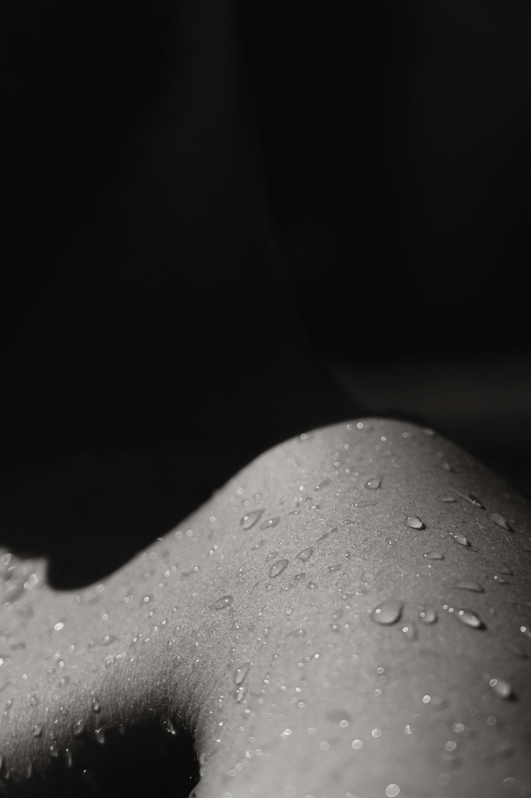

Why Skin Hydration is Important and the Science Behind It

We've all heard it a thousand times: "Drink more water for better skin!" But is hydrated skin really as simple as chugging eight glasses a day? Actually, no! While staying hydrated is undoubtedly crucial for overall health, the relationship between drinking water and skin hydration is more complex than you might think. So, let's dive deep into the world of skin hydration – it's time to make a splash in skincare science!
The Skin's Thirst Trap: Understanding the Layers
Before we can grasp how hydration works, we need to understand the structure of our skin. Think of your skin as a multi-layered cake made up of:
The epidermis: Your body is the hottest club in existence and your skin is the bouncer, keeping the good stuff in and the bad stuff out. It's composed of several sublayers, with the stratum corneum at the very top. This layer is your skin's true MVP when it comes to hydration. The stratum corneum is often described using the "brick and mortar" analogy. The "bricks" are corneocytes - flattened, dead skin cells packed with keratin and natural moisturizing factors (NMFs). The "mortar" is a complex mixture of lipids, including ceramides, cholesterol, and fatty acids. A 2019 study in the Journal of Clinical Medicine revealed that this structure is crucial for maintaining skin hydration. The lipid "mortar" forms a waterproof barrier, while the NMFs in the corneocytes act like little sponges, holding onto water.
The dermis: The skin's very own water reservoir. It's rich in collagen and elastin fibers, giving your skin its plumpness and elasticity. The dermis is also home to blood vessels that supply nutrients and water to the skin. A 2020 review in the journal Cosmetics highlighted how proper blood flow in the dermis is essential for maintaining skin hydration and overall health. Interestingly, this layer also contains your sweat glands. While we often think of sweat as dehydrating, these glands play a role in thermoregulation and maintaining your skin's acid mantle, both of which indirectly contribute to skin hydration.
The hypodermis: The cushy bottom layer that insulates and protects is primarily composed of fat cells. While it doesn't play a direct role in skin hydration, it's crucial for insulation and protection. This layer can influence the overall appearance of skin hydration. A well-maintained hypodermis contributes to skin's plumpness and ability to bounce back, which we often associate with well-hydrated skin
Skin hydration survives and thrives by the stratum corneum, the outermost layer of the epidermis. This layer is your skin's frontline defense, and keeping it hydrated is crucial for maintaining healthy, glowing skin. A groundbreaking 2021 study used advanced imaging techniques to visualize the skin barrier in action. The researchers found that a healthy skin barrier is crucial for maintaining optimal skin hydration, more so than the amount of water you drink or products you apply.
The skin barrier's effectiveness depends on several factors:
Lipid composition: The right mix of ceramides, cholesterol, and fatty acids creates a waterproof seal.
Natural Moisturizing Factors (NMFs): These compounds, including amino acids and hyaluronic acid, help attract and retain water in the stratum corneum.
pH balance: The slightly acidic nature of healthy skin (around pH 5.5) supports barrier function and fights off harmful bacteria.
Cell turnover: Regular shedding and replacement of skin cells help maintain a healthy barrier.
Understanding this complex structure helps us realize why skin hydration is about so much more than just drinking water. It's a delicate balance of internal and external factors, all working together to keep your skin plump, protected, and perfectly moisturized.
Water, Water Everywhere, But Not a Drop for Skin?
Here's where things get interesting. Most studies on the matter show that increasing water intake has little effect on skin hydration in healthy individuals. Before you spit out your water in shock, let's break this down.
While drinking more water can increase blood flow to the skin, it doesn't significantly change the water content in the stratum corneum. In other words, all that extra water you're drinking isn't going to prioritize your skin cells. Our skin is the largest organ on our bodies and, also, very smart. Our body naturally prioritizes hydration but when we drink water, our body will process that hydration to the organs that need it most. Often, that will be our internal organs and our skin might be dead last to receive any benefits.
So, if drinking water isn't the hydration hero we thought it was, what's really keeping our skin moisturized?
The Real MVPs of Skin Hydration
Natural Moisturizing Factor (NMF): This cocktail of substances produced by your skin includes amino acids, lactate, and urea. NMF components act like little sponges, attracting and holding onto water in the stratum corneum.
Lipids: These fatty substances form a protective barrier on your skin's surface, locking in moisture. A healthy lipid barrier is crucial for maintaining skin hydration, even more so than the amount of water you drink.
Hyaluronic Acid: Your skin cells produce hyaluronic acid and release it into the extracellular matrix—the space between your skin cells. In this space, HA molecules act like highly efficient sponges. They create a sort of water reservoir in your skin, helping maintain consistent hydration levels. They also help distribute this water evenly throughout the skin tissue. This is particularly important in the deeper layers of skin where HA concentration is naturally higher.
Maintaining skin hydration is a delicate balancing act between water content and water loss. Enter the concept of Transepidermal Water Loss (TEWL). This is the amount of water that evaporates from your skin's surface. Factors like humidity, temperature, and skin barrier function all play crucial roles in regulating TEWL.
So, while drinking water might not directly hydrate your skin, it does help maintain your body's overall water balance, which indirectly supports skin health. It's like watering the soil to nourish a plant, rather than spritzing the leaves.
5 Skin Hydration Tips
Now that we've debunked the "just drink more water" myth, let's explore science-backed strategies for keeping your skin hydrated:
Humectants are Your Friends: Look for skincare products containing glycerin, hyaluronic acid, or urea. A 2021 study in the "Journal of Cosmetic Dermatology" found that a combination of these humectants significantly improved skin hydration when applied topically.
Occlusives for the Win: These are ingredients that form a physical barrier on the skin, reducing TEWL. Think petroleum jelly or oils. A 2020 review in "Clinical, Cosmetic and Investigational Dermatology" highlighted the effectiveness of occlusive agents in improving skin hydration, especially when combined with humectants.
Don't Overdo Cleansing: Harsh soaps can strip your skin of its natural oils. A 2019 study in the "Journal of Clinical Medicine" found that using mild, pH-balanced cleansers helped maintain skin barrier function and hydration.
Consider Your Environment: Remember that 2019 study on TEWL? It also found that environmental factors play a huge role in skin hydration. Using a humidifier in dry environments can help reduce water loss from your skin.
Eat Your Water: A 2020 study in the journal "Nutrients" found that a diet rich in fruits, vegetables, and omega-3 fatty acids supported skin hydration from the inside out. So, maybe instead of just drinking your water, try eating it too!
Best Skin Hydration Product
BARRIER BREW— Our hydrating and healing serum powered by Beta Glucan! This molecule’s unique molecular structure allows it to penetrate deeply into the skin while simultaneously forming a protective layer on the surface. This means it can deliver hydration to multiple skin layers while helping to prevent moisture loss. Additionally, beta glucan has been shown to stimulate the production of ceramides and other barrier-strengthening compounds, which further enhances its hydrating properties. Unlike hyaluronic acid, which primarily works as a humectant, beta glucan's multiple mechanisms of action make it a more comprehensive hydrating ingredient.
The Science of Superior Hydration: Your Next Step
Perhaps it's time to view skin hydration not as an isolated goal, but as part of a larger picture of health and well-being. After all, our skin is our largest organ, and its hydration status can be a reflection of our overall health.
As we continue to unravel the complexities of skin science, one thing becomes clear: there's no one-size-fits-all solution to skin hydration. It's a nuanced interplay of internal and external factors, as unique as each person's skin.
This is where advanced treatments like the Hydrafacial come in. This innovative treatment works in harmony with your skin's natural hydration mechanisms, delivering multi-level hydration while supporting your skin barrier function. During a Hydrafacial, your skin receives targeted hydration through a proprietary Vortex-Fusion delivery system that helps replenish your skin's Natural Moisturizing Factors while supporting that crucial lipid barrier we discussed earlier. Book the GLORY treatment for the ultimate Hydrafacial experience with us!
So the next time someone tells you to just drink more water for better skin, you can smile knowingly. You're armed with the science to understand that while hydration is important, the journey to healthy, hydrated skin is a fascinating, multifaceted adventure.